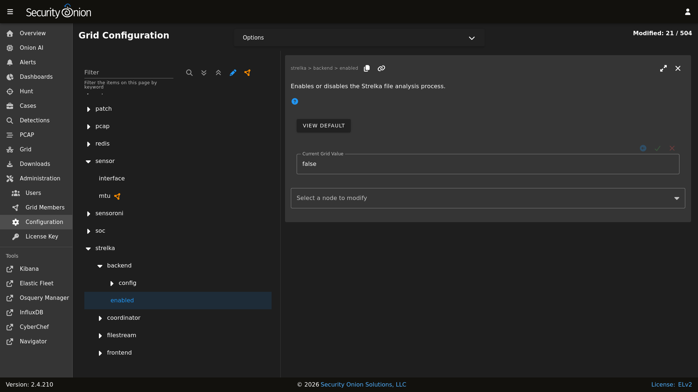

Strelka
From https://github.com/target/strelka:
Strelka is a real-time file scanning system used for threat hunting, threat detection, and incident response. Based on the design established by Lockheed Martin’s Laika BOSS and similar projects (see: related projects), Strelka’s purpose is to perform file extraction and metadata collection at huge scale.
If you are monitoring network traffic, then either Zeek or Suricata should be extracting certain files detected in unencrypted network traffic. Strelka then analyzes those files and they end up in /nsm/strelka/processed/.
Security Onion checks file hashes before sending to Strelka to avoid analyzing the same file multiple times in a 48 hour period.
Alerts
Strelka scans files using YARA rules. If it detects a match, then it will generate an alert that can be found in Alerts, Dashboards, or Hunt. You can configure YARA rules via Detections.
Logs
Even if Strelka doesn’t detect a YARA match, it will still log metadata about the file. You can find Strelka logs in Dashboards and Hunt.
Configuration
You can configure Strelka by going to Administration –> Configuration –> strelka.
{kind=link}

Diagnostic Logging
Strelka diagnostic logs are in /nsm/strelka/log/. Depending on what you’re looking for, you may also need to look at the Docker logs for the containers:
sudo docker logs so-strelka-backend
sudo docker logs so-strelka-coordinator
sudo docker logs so-strelka-filestream
sudo docker logs so-strelka-frontend
sudo docker logs so-strelka-manager
More Information
Note
For more information about Strelka, please see https://github.com/target/strelka.